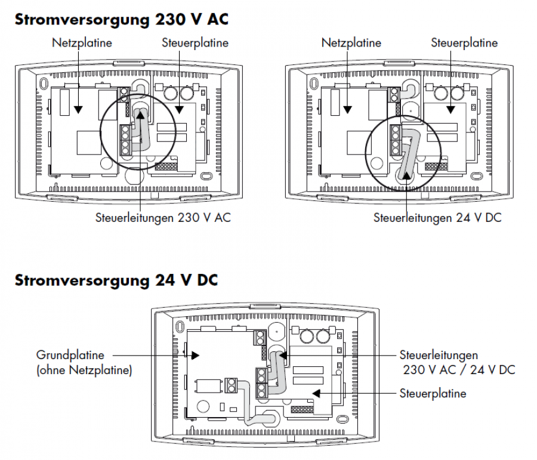

SIG_SENS_W
Firmware Version : 1.4 |
 |
Kurzinfo
S Dieses Gerät ist ein Z-Wave-Sensor. Die Inklusion und Exklusion wird durch einfaches Drücken der Z-Wave Taste an der Geräteunterseite bestätigt.
Weitergehende Informationen finden sich in den jeweiligen Abschnitten dieses Handbuches.
Was ist Z-Wave?
Dieses Produkt entspricht dem Z-Wave-Standard. Z-Wave ist der internationale Funkstandard zur Kommunikation von Geräten im intelligenten Haus. Z-Wave-Geräte funken in Europa auf der Frequenz von 868.42 MHz.Z-Wave ermöglicht eine sichere und stabile Kommunikation indem jede Nachricht vom Empfänger rückbestätigt wird (Zweiwege-Kommunikation) und alle netzbetriebenen Geräte Nachrichten weiterleiten (Routing) können, wenn eine direkte Funkbeziehung zwischen Sender und Empfänger gestört ist.
Dank Z-Wave können Produkte unterschiedlicher Hersteller miteinander in einem Funknetz verwendet werden. Damit ist auch dieses Produkt mit beliebigen anderen Produkten anderer Hersteller in einem gemeinsamen Z-Wave Funknetz einsetzbar.
Z-Wave unterscheidet zwischen Controllern und Slaves. Slaves sind entweder Sensoren S, die Daten ermitteln oder Aktoren A, die Aktionen ausführen (Sensoren und Aktoren sind mitunter in einem Gerät vereint). Controller sind entweder statische netzgespeiste Controller C (auch IP-Gateways genannt) oder mobile batteriebetriebene Controller (Fernbedienungen, Batteriewandschalter)R. Damit ergeben sich eine Reihe prinzipieller Kommunikationsmöglichkeiten in einem Z-Wave-Netz:

- Controller steuern Aktoren.
- Aktoren melden Änderungen ihres Schaltzustandes
- Sensoren melden Messwerte oder Statusänderungen an Controller
- Sensoren steuern Aktoren direkt bei Ereignissen
- Aktoren steuern andere Aktoren
- Fernbedienungen erzeugen Ereignisse in einem statischen Controller, die zum Beispiel zum Steuern von Szenen genutzt werden
- Fernbedienungen steuern Aktoren
Controller können in einem Z-Wave Netzwerk zwei unterschiedliche Rollen einnehmen. Es gibt immer genau einen Primärcontroller der das Netzwerk steuert und Geräte in das Netzwerk inkludiert oder aus dem Netzwerk exkludiert. Dieser Controller kann weiter Nutzerfunktionen - zum Beispiel Tasten - besitzen. Alle anderen Controller mit Nutzerfunktionen erfüllen keine Managementaufgaben. Sie heißen Sekundärcontroller. Trotzdem verfügen sie - sozusagen als Backup - über alle notwendigen Informationen über das Netz. Das Übersichtsbild zeigt, das - batteriegestützt - Sensoren nicht direkt mit - batteriebetriebenen - Fernbedienungen kommunizieren. Sie senden nur Daten an statische Controller oder steuern Aktoren direkt.
Produktbeschreibung
Die CO2- und VOC-Konzentration in der Luft wird in ppm (parts per million = Teile pro Million) gemessen. Die CO2-Konzentration liegt in der freien Natur bei ca. 350 ppm und ab ca. 800 ppm wird das Wohlbefinden des Menschen gestört. Die CO2-Konzentration in der Raumluft hängt von der Personenanzahl und deren Aufenthaltsdauer im Raum, dem Raumvolumen sowie der Luftwechselrate ab. Beispielsweise stellt sich bei zwei Personen in einem Raum, mit einem Volumen von 60 m³ und einer Luftwechselrate von 1, ein CO2-Gehalt von 900 ppm ein. Ohne Lüftung würde die Konzentration nach zwei Stunden auf 1500 ppm und nach fünf Stunden auf 2500 ppm ansteigen.
Der Luftqualitätssensor SENSOAIR erfasst über zwei Sensoren den CO2 Gehalt (Kohlendioxyd) und die VOC Werte (Volatile Organic Compound) in geschlossenen Räumen. VOCs sind flüchtige organische Verbindungen in Form von Gasen, z. B. Zigarettenrauch, Körperausdünstungen, Küchengerüche u.s.w. Die gemessene Luftqualität wird auf einer LED-Ampel angezeigt und kann via Z-Wave ausgelesen werden.
Sicherheitshinweis
Lesen Sie dieses Handbuch vor der Installation!
Achtung! Dieses Gerät wird mit 230 V Netzspannung betrieben. Beachten Sie die Sicherheitshinweise während der Installation. Vor Beginn der Installation müssen alle Anschlussleitungen potentialfrei sein. Weiterhin muss sichergestellt sein, dass während der Installation niemand die Spannung wieder zuschalten kann (Sicherung wieder aktivieren). Elektrische Arbeiten dürfen nur von einer Elektrofachkraft in Übereinstimmung mit den geltenden Regeln und Vorschriften durchgeführt werden.
Verwenden Sie das Gerät auf keine andere Weise als im Handbuch angegeben. Der Hersteller übernimmt keine Garantie für unsachgemäße Bedienung.
Installationsanleitung

- Öffnen Sie das Gehäuse indem Sie die Gehäusevorderseite abnehmen.
- Entfernen Sie die vorgeprägten Ausbrüche für die Schrauben und Anschlusskabel.
- Ziehen Sie das Netzkabel durch den Kabelausbruch, und verwenden Sie das Gehäuseunterteil als Schablone für die Schrauben.
- Schließen Sie das Netzkabel gemäß der Abbildung an. Sie können das Gerät wahlweise mit 230V AC oder 24V DC betreiben.
- Schließen Sie das Gehäuse wieder vor der Inbetriebnahme.

Beachte:
- Verwenden Sie das Gerät ausschließlich in geschlossenen, trockenen und staubfreien Räumen ein.
- Die Umgebungstemperatur von 5°C - 40°C ist einzuhalten.
- Das Gerät ist NICHT als Messgerät oder Bestandteil von Gaswarn- oder ähnlichen Sicherheitseinrichtungen geeignet.
- Verwenden Sie keine Lösungsmittel in der Nähe des Gerätes.
- Silikondämpfe können die Funktion des Gerätes beeinträchtigen.
- Benutzen Sie das Gerät nur mit Originalzubehör von SIEGENIA-AUBI.
- Der Einabu des Gerätes ist immer durch erfahrene Fachleute unter Beachtung der Montagehinweise vorzunehmen.
- Verwenden Sie das Gerät nur in technisch einwandfreiem Zustand. Nehmen Sie keine Veränderungen an den Gerätekomponenten vor.
- Achten Sie darauf, dass die Lüftungsöffnungen frei bleiben und nicht von anderen Geräten, Möbeln oder Gegenständen verdeckt werden.
- Lassen Sie das Gerät bei Defekt nur von einem Fachmann reparieren.
Verhalten des Gerätes im Z-Wave Netz
I Im Auslieferungszustand ist das Gerät mit keinem Z-Wave-Netz verbunden. Damit es mit anderen Z-Wave Geräten kommunizieren kann, muss es in ein bestehendes Z-Wave Netz eingebunden werden. Dieser Prozess wird bei Z-Wave Inklusion genannt. Geräte können Netzwerke auch wieder verlassen. Dieser Prozess heißt bei Z-Wave Exklusion. Beide Prozesse werden von einem Controller gestartet, der dazu in einen Inklusion- bzw. Exklusion-Modus geschaltet werden muss. Das Handbuch des Controllers enthält Informationen, wie er in diese Modi zu schalten ist. Erst wenn der Controller des Z-Wave Netzes im Inclusion-Modus ist, können Geräte hinzugefügt werden. Das Verlassen des Netzes durch Exklusion führt zum Rücksetzen dieses Gerätes in den Auslieferungszustand.
Zur Bestätigung von Inklusion und Exklusion wird die Z-Wave Taste an der Geräteunterseite einmal gedrückt.
Bedienung des Gerätes
Vor der ersten Inbetriebnahme muss der SENSOAIR eingemessen werden.
Vorraussetzungen: Der Raum muss vor der Einmessung gut gelüftet werden. Die Raumtemperatur muss zwischen 5°C und 40°C liegen. Es dürfen sich keine Personen oder Tiere im Raum aufhalten.
Einmessung:
- Stromzufuhr einschalten - Einmessung startet.
- Sensoren werden aufgeheizt und auf den Referenzwert von 350 ppm kalibriert - LED blinkt 1x lang grün.
- Nach Abschluss der Einmessung (ca. 30 Minuten) leuchtet die LED dauerhaft grün. Das Gerät ist dann betriebsbereit.
Der SENSOAIR erfasst mit einem Sensor den Kohlendioxydgehalt (CO2). Die gemessene Luftqualität wird auf einer LED-Ampel angezeigt.

Node Information Frame
NIF Der Node Information Frame ist die Visitenkarte eines Z-Wave Gerätes. Es ist ein spezielles Datenpaket, in dem der Gerätetyp sowie die Funktionen des Gerätes bekanntgemacht werden. Inklusion und Exklusion eines Gerätes wird von diesem mit einem Node Information Frame beantwortet. Zusätzlich kann der Node Information Frame für bestimmte Konfigurationsprozesse des Z-Wave Netzes - zum Beispiel das Setzen von Assoziationen - benötigt werden.
Das einfache Drücken der Z-Wave Taste an der Geräteunterseite führt zum Aussenden eines Node Information Frame.
Bedeutung der LED-Signale
Ein kurzes Blinken der gelben LED quittiert folgende Aktionen:
- Gerät wurde in ein Netzwerk eingebunden oder aus einem Netzwerk entfernt.
- Eine Assoziaton mit einem anderen Z-Wave Gerät wurde hergestellt.
- Das Gerät wurde auf Werkseinstellungen zurückgesetzt.
Assoziationen - wie werden andere Geräte gesteuert?
A Z-Wave Geräte können andere Geräte direkt steuern. Diese direkte Steuerung heißt in Z-Wave Assoziation. In den steuernden Geräten muss dazu die Geräte-ID des zu steuernden Gerätes hinterlegt werden. Dies erfolgt in sogenannten Assoziationsgruppen. Eine Assoziationsgruppe ist immer an ein Ereignis im steuernden Gerät gebunden (Tastendruck oder Auslösen eines Sensors). Bei Eintritt dieses Ereignisses wird an alle in einer Assoziationsgruppe hinterlegten Geräte ein Steuerkommando gesendet.
Assoziationsgruppen:
| 1 | Automatische Sensormeldung (max. Anzahl Geräte: 5) |
Konfigurationseinstellungen
Z-Wave Produkte können direkt nach der Inklusion im Netz verwendet werden. Durch Konfigurationseinstellungen kann das Verhalten des Gerätes jedoch noch besser an die Anforderungen der Anwendung angepasst und zusätzliche Funktionen aktiviert werden.
WICHTIG: Manche Steuerungen erlauben nur die Konfiguration von vorzeichenbehafteten Werten zwischen -128 und 127. Um erforderliche Werte zwischen 128 und 255 zu programmieren, muss der gewünschte Wert minus 256 eingegeben werden. Beispiel: um einen Parameter auf einen Wert von 200 zu setzen, müsste der Wert 200-256 = -56 eingegeben werden, wenn nur positive Werte bis 128 akzeptiert werden. Bei Werten von 2 Byte Länge wird die gleiche Logik angewandt: Werte über 32768 werden als negative Werte angegeben
| Wert | Beschreibung |
|---|---|
| 0 | Einen Report sendet, wenn der CO2-Gehalt 600, 800, 100, 1500, 2000 oder 2500 ppm übersteigt |
| 1 | Aktiviert das regelmäßige Senden eines Status-Reports. |
| 2 | Aktiviert das Senden eines "AN" Signals bei Erreichen eines definierten CO2 Schwellwertes. |
| 3 | Aktiviert das Senden des Report als Broadcast. |
| 7 | Aktiviert die LED an der Frontseite. |
| Wert | Beschreibung |
|---|---|
| 1 — 255 | Sekunden (Voreingestellt 30) |
Kommandoklassen
Unterstützte Kommandoklassen- Basic (Version 1)
- Association (Version 1)
- Version (Version 1)
- Configuration (Version 1)
- Multilevel Sensor (Version 3)
- Manufacturer Specific (Version 1)
- Sensor Configuration (Version 1)
Technische Daten
| Explorer Frames | Nein |
| SDK | 5.02 pl3 |
| Geräteart | Slave with routing capabilities |
| Allgemeiner Z-Wave-Gerätetyp | Multilevel Sensor |
| Spezieller Z-Wave-Gerätetyp | Routing Multilevel Sensor |
| Router | Ja |
| FLiRS | Nein |
| Firmware Version | 1.4 |
Erläuterung Z-Wave-spezifischer Begriffe
- Controller... ist ein Z-Wave-Gerät mit erweiterten Fähigkeiten zur Verwaltung eines Netzes. Dies sind in der Regel Gateways oder Fernbedienungen. Batteriegespeiste Wandschalter können auch Controller sein.
- Slave... ist ein Z-Wave-Gerät mit erweiterten Fähigkeiten zur Verwaltung eines Netzes. Es gibt Sensoren, Aktoren und auch Fernbedienungen als Slaves.
- Primärcontroller (engl. Primary Controller)... ist der zentrale Netzverwalter des Z-Wave-Netzes.
- Inklusion (eng. Inclusion)... ist der Prozess des Einbindens eines neuen Gerätes ins Z-Wave-Netz.
- Exklusion (engl. Exclusion)... ist der Prozess des Entfernens eines Gerätes aus dem Z-Wave-Netz.
- Assoziation (engl. Association)... ist eine Steuerbeziehung zwischen einem steuernden und einem gesteuerten Gerät. Die Information dazu wird im steuernden Gerät in einer Assoziationsgruppe hinterlegt.
- Wakeup Notifikation (engl. Wakeup Notification) ... ist eine spezielle Funknachricht, mit der ein batteriegespeistes Gerät bekanntmacht, daß es im Aufwachstatus ist und Z-Wave-Nachrichten empfangen kann.
- Node Information Frame... ist eine spezielle Funknachricht, mit der ein Z-Wave-Gerät seine Geräteeigenschaften bekanntgibt.
Entsorgungshinweis
Dieses Gerät enthält keine Batterien.
Das ist ein elektrisches Gerät. Es kann kostenfrei bei entsprechenden Annahmestellen abgegeben werden.